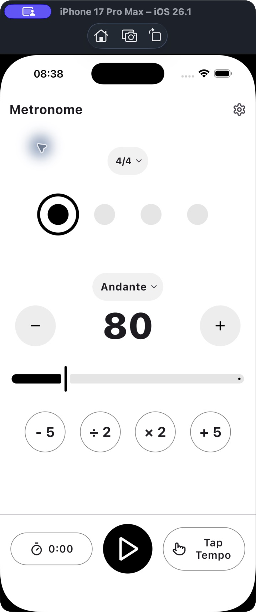
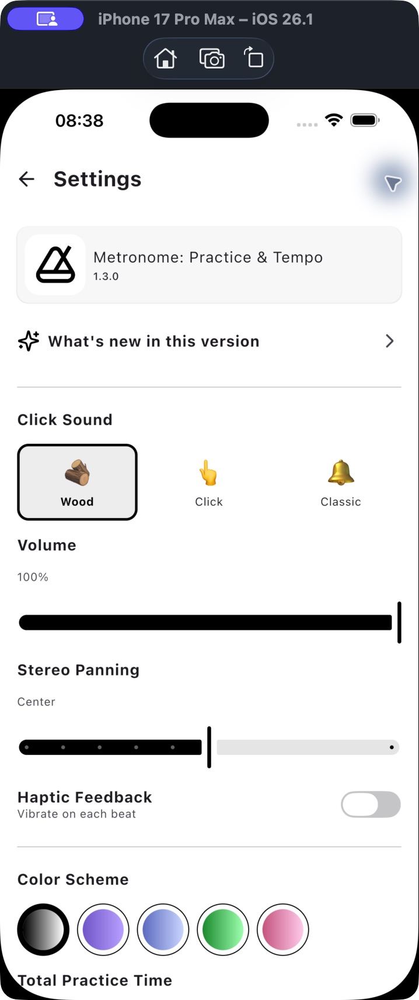
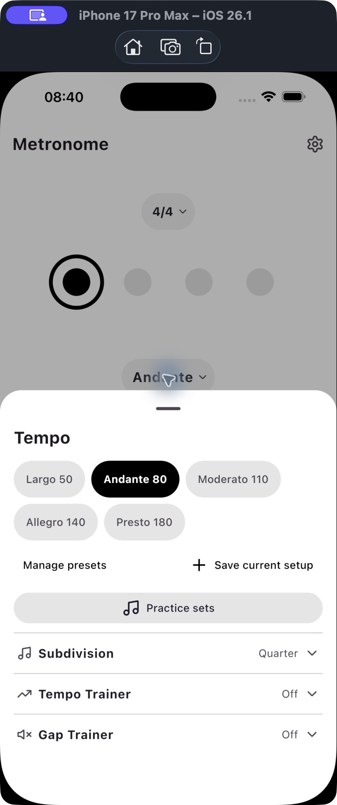
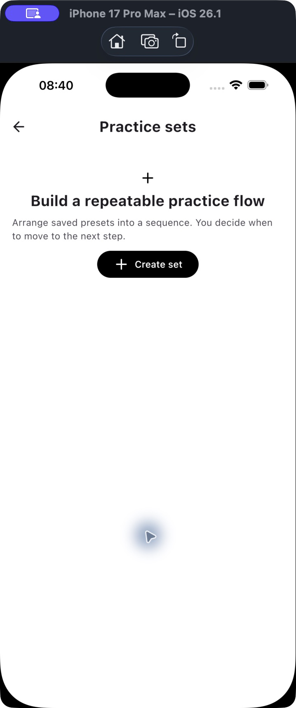
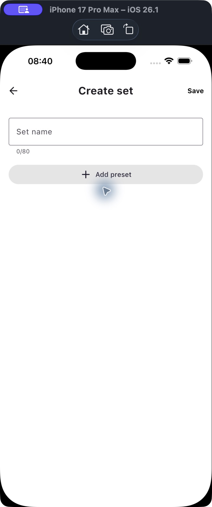
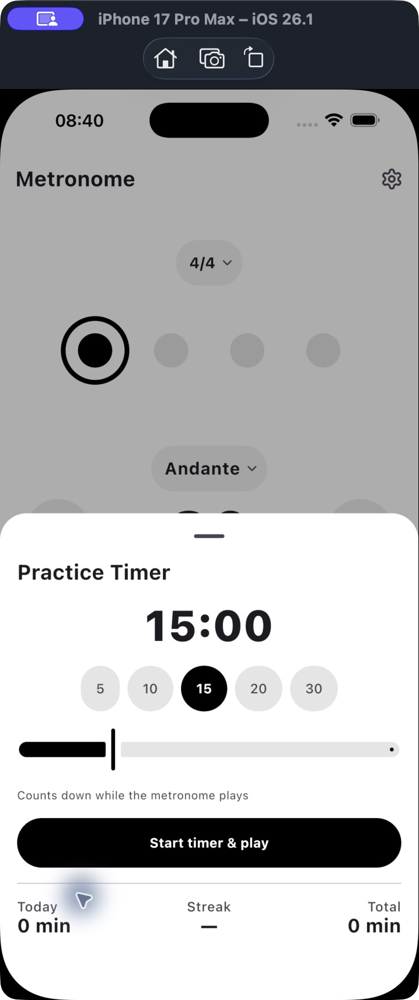

REVIEW ARTIFACT · PROPOSED CHANGES
Metronome product review — 3 October 2026
Recommendation
Keep the calm instrument identity. The strongest next release would improve discovery and control: a visible Practice entry, a clearer Settings hierarchy, a proper sound picker with previews, and a small Suby section at the end of Settings. Add depth through editable starter routines before widening the product into more tools.
This is a review and a concrete design proposal. Application code and the adopted roadmap were not changed.
Evidence and limits
- Captured and inspected six screens during this review using the installed iOS 1.3.0 simulator build on iPhone 17 Pro Max, iOS 26.1. The installed bundle dates from 3 September; its exact source revision is unknown.
- Cross-checked the current checkout at
698c588, includingPRODUCT.md,DESIGN.md, Settings, tempo/practice screens, preset models, and Android/iOS sound players. - The current source already includes Sound, Appearance and Practice headings, plus a theme selector. These do not appear in the installed build. Recommendations below account for those source improvements; missing headings in the captured build are not reported as a current-source defect.
- Decoded all three current audio files and compared Android and iOS copies. Results and method are saved in
artifacts/product-review-2026-10-03/audio-analysis.json. - Simulator scrolling did not respond reliably, so lower Settings controls were reviewed in source rather than captured. Android screens, dark appearance, larger text, VoiceOver/TalkBack traversal, real-device audio, interruptions and background behaviour were not exercised. Screenshots do not establish accessibility compliance or playback accuracy.
- Previously confirmed product positioning was used as context and reconfirmed in the current
PRODUCT.md; older audit findings were not used as evidence of current behaviour.
Captured journey
| Step | Screen and health | Evidence-led finding | Recommended change |
|---|---|---|---|
| 1 | Main metronome — strong basic hierarchy; discovery needs work | BPM, beat state and Play are clear. The visible entry to presets, sets and trainers says only “Andante.” | Keep Andante as tempo information. Provide an explicit Practice entry and a small Sound shortcut. Make BPM tappable for exact entry. |
| 2 | Settings top — usable, with inefficient priority | App identity and What's New occupy the first part of the screen. Three large emoji sound choices and two sliders dominate the next part. | Put sound controls first; move app identity and version to About. Replace the expanding sound grid with a selected-value row and sound sheet. |
| 3 | Tempo/tools sheet — rich but overloaded | A sheet titled Tempo also contains preset management, Practice sets, Subdivision and two trainers. | Separate tempo/rhythm editing from a Practice sheet or library. Give each tool a one-line purpose and preserve its current setting in the summary. |
| 4 | Practice sets library — clear empty state; activation needs help | “Create set” is the only way into an empty library. The musician has to imagine a routine and already understand presets. | Offer an editable starter routine alongside Create set. Never populate the user's library silently. |
| 5 | Create set — simple editor; prerequisite is hidden | An empty editor has a name field, Add preset and Save. It does not explain what to do if no presets exist yet. | Explain the first step and offer Save current setup as a preset when needed. Give steps tempo/meter/goal summaries and a clear valid-save state. |
| 6 | Practice timer — strong focused action | Duration, presets, explanatory copy and Start timer & play are clear; Today/Streak/Total sit below. | Retain this structure. Add “min” beside duration choices and reuse the existing stats through a Practice summary entry. |
1. Main metronome

The monochrome surface, large BPM and strong Play control are worth keeping. The quiet beat indicators already distinguish accent from normal with shape. Avoid adding a dashboard or extra persistent animation.
The main usability improvement is naming: a musician should be able to find a training tool without knowing that an Italian tempo marking opens it. Add one restrained “Practice” control near the tempo region; avoid another dominant bottom action competing with Play.
Make the number itself an exact-BPM entry point, with a keyboard and a clear valid range. Hold-to-repeat on plus/minus should complement the existing slider and ±5 controls. These control improvements are already represented in the adopted roadmap.
2. Settings top

Move the app identity block to About. What's New can remain a normal row under Help & about, with a discreet indication only for an unread release. Source already adds section headings; the remaining task is ordering and ownership.
Replace sound emoji with text and restrained Lucide icons. A checkmark and an accessible selected state should identify the current sound. The current three-column layout cannot comfortably grow to seven or eight sounds or long translated names.
3. Tempo and practice tools

Suggested ownership:
- Tempo/rhythm: exact BPM, tempo suggestions, meter, subdivision and per-beat accent/mute.
- Practice: saved presets, practice sets, timer, tempo trainer, gap trainer and existing practice summary.
- Settings: global defaults, sound, appearance, playback behaviour and data management.
Keep the active trainer or set summary visible on the instrument and tappable to return to its controls. Reuse the existing session-strip pattern rather than creating several competing status areas.
Use short explanations: “Build speed gradually” for Tempo Trainer and “Keep time through silent bars” for Gap Trainer. Existing functionality should be made easier to find before another trainer is added.
4. Practice sets library

Add a separate “Try a starter routine” action. Examples could include a three-step warm-up at 60, 72 and 84 BPM, or a repeatable three-tempo scale routine. Show a preview, let the musician edit it, and create its presets and set only after they choose to save it. Starter routines should use the real preset/set model and validation rather than a separate training system.
For saved rows, show a useful summary such as “3 steps · 60–84 BPM · Manual advance,” or a duration only when all goals make a duration knowable. Avoid invented completion times for manual/bar-based routines.
5. Set editor

Show “Add your first preset to build this routine.” If the preset library is empty, offer to save the current metronome setup first and return directly to the editor. Keep entered set names and step edits intact through that navigation.
Give each step a compact summary: preset name, BPM, meter and Manual / duration / bar goal. Keep advance policy explicit. Preserve the existing step-reordering controls. Step duplication and a sequence preview are possible extensions; preserve the existing storage/recovery behaviour.
6. Practice timer

The single strong action is appropriate. Clarify the units in duration chips and the fact that time counts only during playback. Practice statistics already exist; a new summary surface should reuse them, not introduce duplicate counting.
Proposed Settings hierarchy
Accessibility considerations tied to the captured steps: on the main screen (1), use action labels such as “Decrease tempo by 1 BPM” and preserve targets when adding shortcuts. In Settings (2), expose sound selection beyond the visible border and give colour swatches a readable selected name. In the tools sheet (3), announce expanded/collapsed and active state. In the sets library (4), give any starter routine a complete descriptive name. In the editor (5), announce field labels, validation and reorder results. In the timer (6), include minutes in the accessible duration labels and avoid announcing a ticking value every second. These are source-informed requirements and verification targets; no screen-reader traversal was completed.
Keep the first revision on one scrollable Settings screen with consistent grouped rows. Use a sheet for choosing sounds, expandable secondary audio controls, and a dedicated data screen if export/erase options grow. This avoids adding a navigation level to every simple preference.
| Order | Section | Contents |
|---|---|---|
| 1 | Sound & feedback | Click sound → picker; click volume; beat haptics. Secondary audio controls: stereo pan and, when implemented, accent/subdivision balance. |
| 2 | Practice & playback | Count-in; keep screen awake; background playback where meaningful; iOS Live Activity. Count-in length is a proposed extension. |
| 3 | Appearance & motion | System/Light/Dark; colour scheme with a visible selected name; Dots/Pendulum; Beat flash; follow the system's reduced-motion preference. |
| 4 | Practice data | View existing practice summary; Export/Import when implemented; Reset practice history inside the data screen with its existing confirmation. |
| 5 | Help & about | Contact support; Rate the app; What's New; privacy information; app version. |
| 6 | Also by me | One compact Suby item. |
Specific moves from the current source: move Color Flash and Beat Display from Practice to Appearance; move Background Play and Live Activity into the named Playback group; move Total Practice Time and Reset into Practice data; move AppInfoCard and What's New down to Help & about.
Use consistent label/value rows, quiet dividers, 18dp horizontal spacing and Material theme roles. Keep 48dp interaction targets, wrapping labels and system typography. Long labels and large text should reflow instead of shrinking into unreadable text. Make the full settings-switch row operable where compatible with the native switch and assistive technology.
“Color Flash” should become “Beat flash,” with explanatory text. Follow reduced-motion preferences by default and let the user explicitly opt into any stronger visual pulse. Verify readability and motion on a device before calling this accessible.
Background-play wording must reflect actual platform behaviour. The iOS permission-check function is empty; this alone does not prove a toggle is ineffective. Validate the complete lifecycle path before retaining, renaming or removing that control. Beat haptics also need platform capability and screen/background checks before promising equal behaviour.
This division between general preferences and controls used during a task is consistent with Apple's Settings guidance. The proposed grouping and ordering are design judgments based on this app.
New features worth adding
| Priority | Feature | Why | Relationship to current product/roadmap |
|---|---|---|---|
| First | Editable starter routines | Helps the musician use existing presets and sets immediately; reduces the blank-library problem in steps 4–5. | New recommendation building on current infrastructure. |
| First | Exact BPM entry and hold-to-repeat | Faster than dragging to a precise number while holding an instrument. | Already planned; bring into the control/discovery work. Current range is 40–220 BPM. |
| First | Sound previews and a useful sound palette | Makes sound choice quick and gives long sessions more comfortable options. | Already planned in R7-03; split the picker/asset cleanup from the full eight-set expansion. |
| Next | Backup/export/import of presets and sets | Protects locally stored practice setups and supports sharing an exercise without an account. | Already planned in R3-04; retain tolerant import and codec migration checks. |
| Next | Flexible count-in and compound pulse | One/two bars and an explicit grouped pulse help different musical contexts. For 6/8, clearly explain whether BPM follows eighth notes or dotted-quarter pulses. | Count-in exists; configurable length is an extension. Meter/pulse expansion is already planned. |
| Later | Swing plus progressive/random gaps | Adds meaningful practice depth to existing rhythm/trainer tools. | Already planned. Preserve the engine/device gates before adding modes. |
| Research later | Practice recap/history and hands-free shortcuts | Session-level notes and controls accessible while holding an instrument may help repeat practice. | History is deliberately parked; hardware keys are already planned. Validate demand rather than silently widening the adopted roadmap. |
Saved tempos, presets, practice sets, timers, subdivisions, tempo/gap training, streaks and background experiences already exist. They are not new-feature proposals.
Soundbrenner's current manual documents per-accent sound assignment, setlists and practice history. These are useful comparison points, not evidence that this app should copy its full product scope. Soundbrenner manual.
Sound additions and picker behaviour
Keep Wood, Click and Classic recognizable. Add four clearly different candidates first, then expand after listening tests:
| Proposed sound | Intended character | Intended use |
|---|---|---|
| Soft | Rounded attack, short decay, reduced harsh high frequencies | Longer headphone sessions |
| Rim | Dry, short rimshot-like attack | A distinct rhythmic reference while playing |
| Clave | Focused wooden strike, distinguishable from existing Wood | Acoustic practice and groove work |
| Studio | Clean synthesized click with an obvious downbeat voice | General practice and dense subdivisions |
These are authoring goals, not claims about finished samples. Defer an additional Bell or Low voice until auditioning shows it fills a real gap instead of duplicating Classic or being hard to hear on phone speakers.
The sound sheet should show a name, one-line character description, selected checkmark and explicit Preview action. Preview should play one short bar at a clearly labelled preview tempo while the metronome is stopped. It must not start practice tracking, trainers, count-in or background playback. Stop preview on dismissal. During playback, apply a new voice at a safe boundary without adding an overlapping preview. Show loading/failure state rather than presenting a failed change as selected and active.
Offer the same picker from a small “Wood” sound shortcut on the instrument and from Settings. Keep volume prominent and stereo pan secondary. Capture the selected sound in presets only when the stored model and migrations support it; the current preset model does not include sound.
Asset findings from this run
| Current asset | Decoded length | Decoded sample peak | Whole-file RMS |
|---|---|---|---|
| Wood MP3 | 757.62 ms | +1.93 dBFS | −21.78 dBFS |
| Click MP3 | 304.88 ms | −2.76 dBFS | −27.19 dBFS |
| Classic WAV | 25.85 ms | −9.98 dBFS | −26.10 dBFS |
Method: decoded mono floating-point audio at 48 kHz; no device playback measured. Android and iOS copies of each file are byte-identical. The Wood decoded overshoot warrants headroom correction. Much of the long Wood and Click files is below a threshold of 40 dB beneath their respective peaks. Whole-file RMS is affected by file duration and silence; it is not a perceived-loudness comparison. No audible clipping or exact loudness difference is claimed from these figures.
Before adding sounds, trim unnecessary tails, leave peak headroom and match perceived level using listening tests plus consistent transient-window measurements. Prefer short PCM WAV assets to avoid decoder-dependent behaviour. Use three authored voices per set—accent, normal, subdivision—in place of relying only on the current 1.4× accent playback rate. Match normal voices across sets; keep accent/subdivision differences intentional. Source original, CC0 or properly licensed samples and retain provenance.
The implementation must preserve interface + Koin platform abstraction, existing load-before-swap/build-before-swap behaviour, Android resources, iOS Copy Bundle Resources and the web demo's resource mapping. Stereo routing, sample tails, rapid switching and subdivision density need physical speaker/headphone/Bluetooth checks. No sound files were replaced or added to the app in this review.
Suby: noticeable, restrained, personal
Recommended placement: one item under Also by me, after Help & about and before the quiet version footer. Put it outside the main practice controls. Use the real 40–48dp Suby icon, an ordinary app-name label, two lines of useful copy and one small text action. A quiet surface-container background is enough; keep its visual weight below the settings controls.
Suggested copy:
Also by me
Suby
Keep track of subscriptions, renewal dates and shared costs.
Explore Suby
The copy is supported by the current Suby website. It avoids uncertain pricing, savings promises and claims that every feature is free.
Make the whole item a clear external-link target. Open the appropriate platform store listing; use subyapp.com as a fallback. Never launch an external destination without a tap. A confirmed app link can offer Open Suby when the app is installed; do not assume a scheme exists. The latest user direction makes the studio section permanent, with no dismissal control. Its soft-blue branded treatment supersedes the initial neutral-item recommendation.
Keep it static and personal: no badge counts, carousel, animated border, pop-up, repeated prompts or promotional interruption during practice. Keep catalogue/pricing loads out of the settings experience. This is a first-party recommendation from the developer and should be labelled transparently.
Suggested delivery order and acceptance
- Settings and discovery: reorder existing controls, move About down, label Practice clearly and add the small Suby section. Verify both themes, long text, native Back and VoiceOver/TalkBack labels; confirm Suby links resolve on each platform and offline Settings still works.
- Sound foundation: remaster existing files, add the picker/preview and four candidate sounds with deliberate accent voices. Verify no practice-time credit from previews, safe switching while playing, proper release when stopped, equal perceived normal levels and no overlap at maximum supported subdivision density.
- First-use practice value: add editable starter routines and remove empty-library dead ends. Verify presets and sets are created only on Save; edits survive navigation; missing-preset and recovery states remain usable.
- Deeper controls: exact BPM, backup/import, flexible count-in and meter/pulse work, followed by swing/gap extensions under the existing engine and device gates.
These are suggested slices, not delivery estimates or changes to adopted release dates. A small improvement release can stop after the first slice; sound authoring and codec/engine work deserve their own verification.